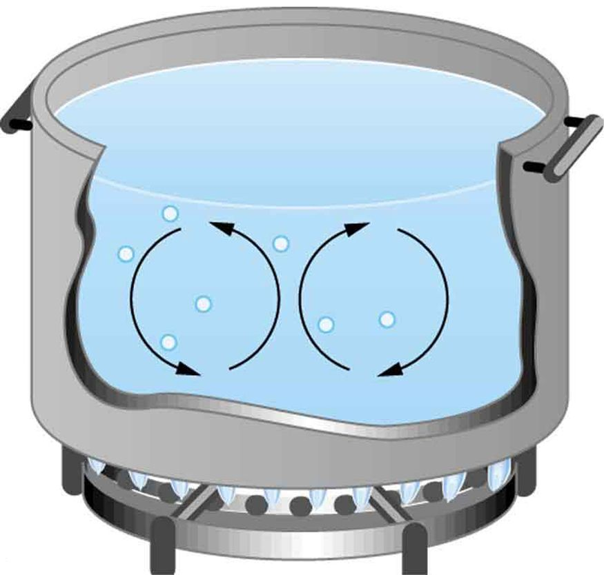
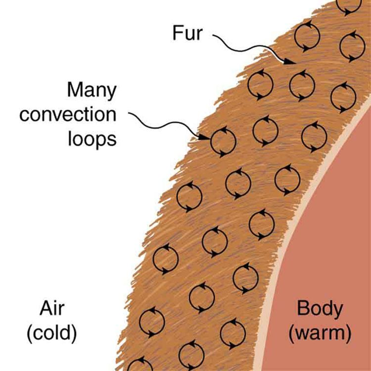
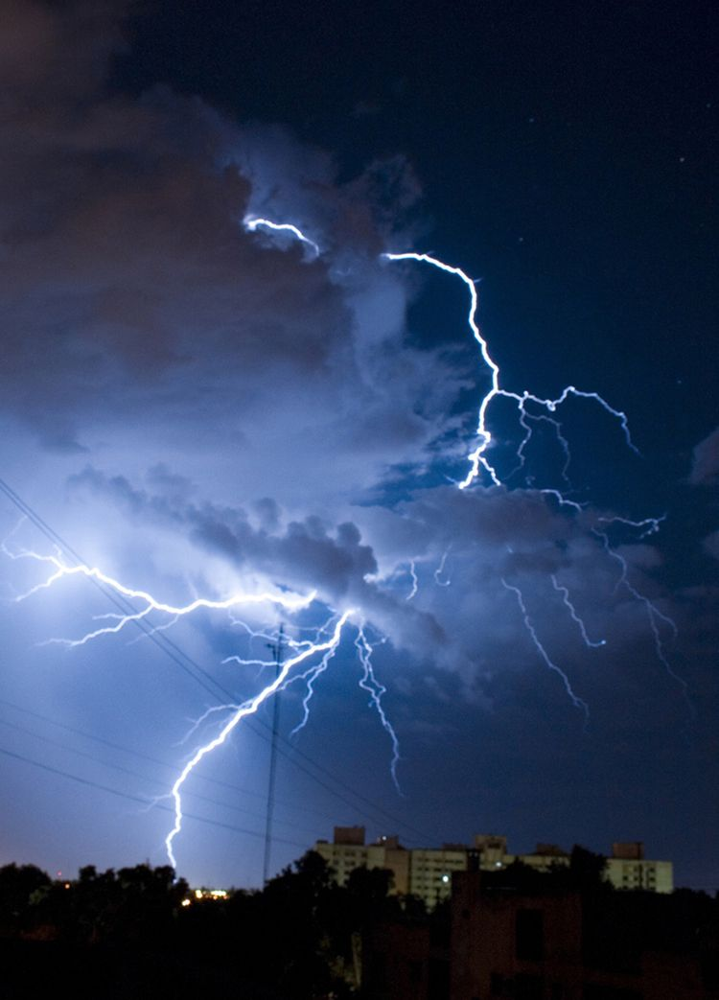
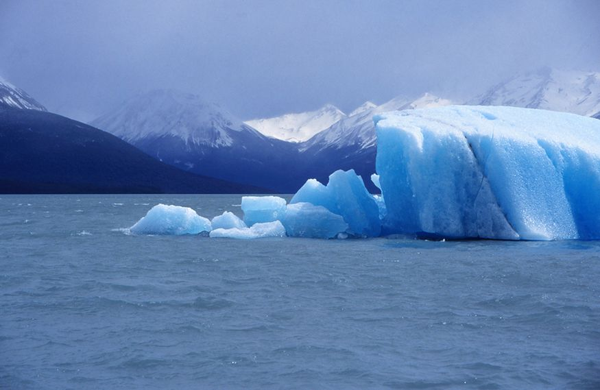
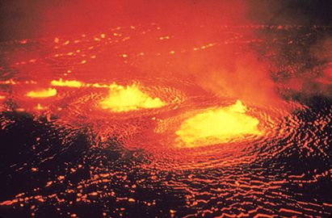

![A cross section of a room is shown. There is a gravity furnace at the left side. The hot air from the furnace is rising up and is shown with the help of upward-pointing arrows along the left wall that are labeled hot air rises. The arrows then become horizontal and pass just under the ceiling to the right wall. The arrows then curve downward, become blue, and pass down the right wall and are labeled air cooled by room sinks. Finally, the blue arrows curve and pass along the floor to return to the gravity furnace.](Figure_15_06_01a.jpg)
The original, as published: OpenStax, College Physics 2e, Urone, Hinrichs, section 14.6 Convection. © Rice University. CC BY-NC-SA 4.0, https://creativecommons.org/licenses/by-nc-sa/4.0/. Imported as published, from https://openstax.org/books/college-physics-2e/pages/14-6-convection
By the end of this section, you will be able to:
Convection is driven by large-scale flow of matter. In the case of Earth, the atmospheric circulation is caused by the flow of hot air from the tropics to the poles, and the flow of cold air from the poles toward the tropics. (Note that Earth’s rotation causes the observed easterly flow of air in the northern hemisphere). Car engines are kept cool by the flow of water in the cooling system, with the water pump maintaining a flow of cool water to the pistons. The circulatory system is used the body: when the body overheats, the blood vessels in the skin expand (dilate), which increases the blood flow to the skin where it can be cooled by sweating. These vessels become smaller when it is cold outside and larger when it is hot (so more fluid flows, and more energy is transferred).
The body also loses a significant fraction of its heat through the breathing process.
While convection is usually more complicated than conduction, we can describe convection and do some straightforward, realistic calculations of its effects. Natural convection is driven by buoyant forces: hot air rises because density decreases as temperature increases. The house in the figure is kept warm in this manner, as is the pot of water on the stove in the figure. Ocean currents and large-scale atmospheric circulation transfer energy from one part of the globe to another. Both are examples of natural convection.

Take two small pots of water and use an eye dropper to place a drop of food coloring near the bottom of each. Leave one on a bench top and heat the other over a stovetop. Watch how the color spreads and how long it takes the color to reach the top. Watch how convective loops form.
Most houses are not airtight: air goes in and out around doors and windows, through cracks and crevices, following wiring to switches and outlets, and so on. The air in a typical house is completely replaced in less than an hour. Suppose that a moderately-sized house has inside dimensions high, and that all air is replaced in 30.0 min. Calculate the heat transfer per unit time in watts needed to warm the incoming cold air by , thus replacing the heat transferred by convection alone.
Heat is used to raise the temperature of air so that . The rate of heat transfer is then , where is the time for air turnover. We are given that is , but we must still find values for the mass of air and its specific heat before we can calculate . The specific heat of air is a weighted average of the specific heats of nitrogen and oxygen, which gives from another section (note that the specific heat at constant pressure must be used for this process).
This rate of heat transfer is equal to the power consumed by about forty-six 100-W light bulbs. Newly constructed homes are designed for a turnover time of 2 hours or more, rather than 30 minutes for the house of this example. Weather stripping, caulking, and improved window seals are commonly employed. More extreme measures are sometimes taken in very cold (or hot) climates to achieve a tight standard of more than 6 hours for one air turnover. Still longer turnover times are unhealthy, because a minimum amount of fresh air is necessary to supply oxygen for breathing and to dilute household pollutants. The term used for the process by which outside air leaks into the house from cracks around windows, doors, and the foundation is called “air infiltration.”
A cold wind is much more chilling than still cold air, because convection combines with conduction in the body to increase the rate at which energy is transferred away from the body. The table below gives approximate wind-chill factors, which are the temperatures of still air that produce the same rate of cooling as air of a given temperature and speed. Wind-chill factors are a dramatic reminder of convection’s ability to transfer heat faster than conduction. For example, a 15.0 m/s wind at has the chilling equivalent of still air at about .
| Moving air temperature | Wind speed (m/s) | ||||
|---|---|---|---|---|---|
Although air can transfer heat rapidly by convection, it is a poor conductor and thus a good insulator. The amount of available space for airflow determines whether air acts as an insulator or conductor. The space between the inside and outside walls of a house, for example, is about 9 cm (3.5 in) —large enough for convection to work effectively. The addition of wall insulation prevents airflow, so heat loss (or gain) is decreased. Similarly, the gap between the two panes of a double-paned window is about 1 cm, which prevents convection and takes advantage of air’s low conductivity to prevent greater loss. Fur, fiber, and fiberglass also take advantage of the low conductivity of air by trapping it in spaces too small to support convection, as shown in the figure. Fur and feathers are lightweight and thus ideal for the protection of animals.

Some interesting phenomena happen when convection is accompanied by a phase change. It allows us to cool off by sweating, even if the temperature of the surrounding air exceeds body temperature. Heat from the skin is required for sweat to evaporate from the skin, but without air flow, the air becomes saturated and evaporation stops. Air flow caused by convection replaces the saturated air by dry air and evaporation continues.
The average person produces heat at the rate of about 120 W when at rest. At what rate must water evaporate from the body to get rid of all this energy? (This evaporation might occur when a person is sitting in the shade and surrounding temperatures are the same as skin temperature, eliminating heat transfer by other methods.)
Energy is needed for a phase change (). Thus, the energy loss per unit time is
We divide both sides of the equation by to find that the mass evaporated per unit time is
(1) Insert the value of the latent heat from another section, . This yields
Evaporating about 3 g/min seems reasonable. This would be about 180 g (about 7 oz) per hour. If the air is very dry, the sweat may evaporate without even being noticed. A significant amount of evaporation also takes place in the lungs and breathing passages.
Another important example of the combination of phase change and convection occurs when water evaporates from the oceans. Heat is removed from the ocean when water evaporates. If the water vapor condenses in liquid droplets as clouds form, heat is released in the atmosphere. Thus, there is an overall transfer of heat from the ocean to the atmosphere. This process is the driving power behind thunderheads, those great cumulus clouds that rise as much as 20.0 km into the stratosphere. Water vapor carried in by convection condenses, releasing tremendous amounts of energy. This energy causes the air to expand and rise, where it is colder. More condensation occurs in these colder regions, which in turn drives the cloud even higher. Such a mechanism is called positive feedback, since the process reinforces and accelerates itself. These systems sometimes produce violent storms, with lightning and hail, and constitute the mechanism driving hurricanes.


The movement of icebergs is another example of convection accompanied by a phase change. Suppose an iceberg drifts from Greenland into warmer Atlantic waters. Heat is removed from the warm ocean water when the ice melts and heat is released to the land mass when the iceberg forms on Greenland.
Explain why using a fan in the summer feels refreshing!
Using a fan increases the flow of air: warm air near your body is replaced by cooler air from elsewhere. Convection increases the rate of heat transfer so that moving air “feels” cooler than still air.
Under which two conditions would convection in a fluid be greatest?
(a)
Sea breezes occur along coastlines, and consist of cool air moving toward the shore from the ocean. However, this only occurs during the day, and is a stronger effect when the air temperature on the land is greatest and the air temperature above the water is coldest. At night, the breezes are reversed, moving from the land toward the ocean. Taking into consideration the specific heat capacities of water and sand (which is about the same as that of concrete), explain how sea breezes form during the day and change direction at night.
One way to make a fireplace more energy efficient is to have an external air supply for the combustion of its fuel. Another is to have room air circulate around the outside of the fire box and back into the room. Detail the methods of heat transfer involved in each.
On cold, clear nights horses will sleep under the cover of large trees. How does this help them keep warm?
At what wind speed does air cause the same chill factor as still air at ?
10 m/s
At what temperature does still air cause the same chill factor as air moving at 15 m/s?
The “steam” above a freshly made cup of instant coffee is really water vapor droplets condensing after evaporating from the hot coffee. What is the final temperature of 250 g of hot coffee initially at if 2.00 g evaporates from it? The coffee is in a Styrofoam cup, so other methods of heat transfer can be neglected.
(a) How many kilograms of water must evaporate from a 60.0-kg woman to lower her body temperature by ?
(b) Is this a reasonable amount of water to evaporate in the form of perspiration, assuming the relative humidity of the surrounding air is low?
On a hot dry day, evaporation from a lake has just enough heat transfer to balance the of incoming heat from the Sun. What mass of water evaporates in 1.00 h from each square meter? Explicitly show how you follow the steps in the Problem-Solving Strategies for the Effects of Heat Transfer.
1.48 kg
One winter day, the climate control system of a large university classroom building malfunctions. As a result, of excess cold air is brought in each minute. At what rate in kilowatts must heat transfer occur to warm this air by (that is, to bring the air to room temperature)?
The Kilauea volcano in Hawaii is the world’s most active, disgorging about of lava per day. What is the rate of heat transfer out of Earth by convection if this lava has a density of and eventually cools to ? Assume that the specific heat of lava is the same as that of granite.

During heavy exercise, the body pumps 2.00 L of blood per minute to the surface, where it is cooled by . What is the rate of heat transfer from this forced convection alone, assuming blood has the same specific heat as water and its density is ?
A person inhales and exhales 2.00 L of air, evaporating of water from the lungs and breathing passages with each breath.
(a) How much heat transfer occurs due to evaporation in each breath?
(b) What is the rate of heat transfer in watts if the person is breathing at a moderate rate of 18.0 breaths per minute?
(c) If the inhaled air had a temperature of , what is the rate of heat transfer for warming the air?
(d) Discuss the total rate of heat transfer as it relates to typical metabolic rates. Will this breathing be a major form of heat transfer for this person?
(a) 97.2 J
(b) 29.2 W
(c) 9.49 W
(d) The total rate of heat loss would be . While sleeping, our body consumes 83 W of power, while sitting it consumes 120 to 210 W. Therefore, the total rate of heat loss from breathing will not be a major form of heat loss for this person.
A glass coffee pot has a circular bottom with a 9.00-cm diameter in contact with a heating element that keeps the coffee warm with a continuous heat transfer rate of 50.0 W
(a) What is the temperature of the bottom of the pot, if it is 3.00 mm thick and the inside temperature is ?
(b) If the temperature of the coffee remains constant and all of the heat transfer is removed by evaporation, how many grams per minute evaporate? Take the heat of vaporization to be 2340 kJ/kg.